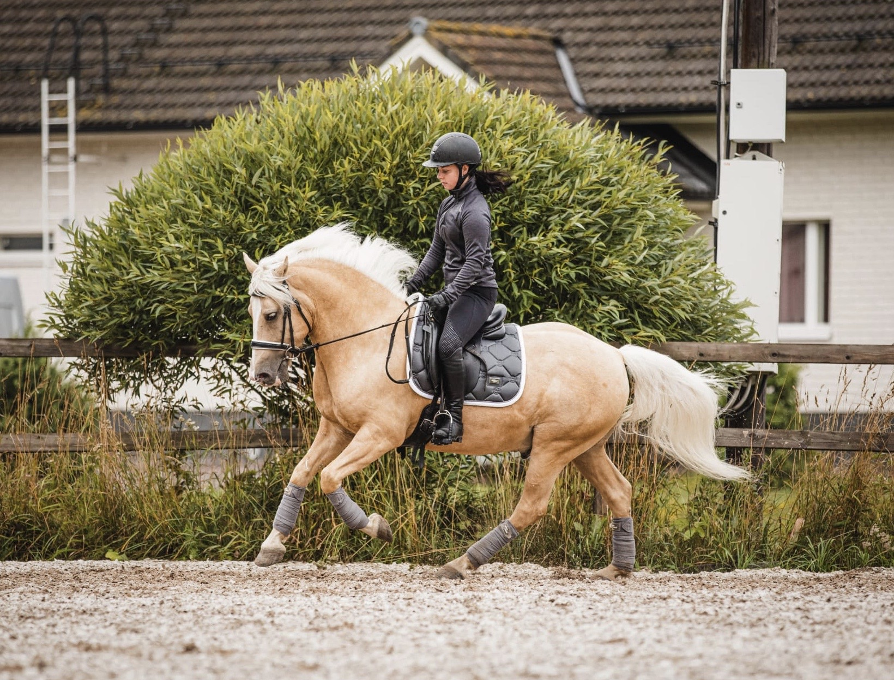
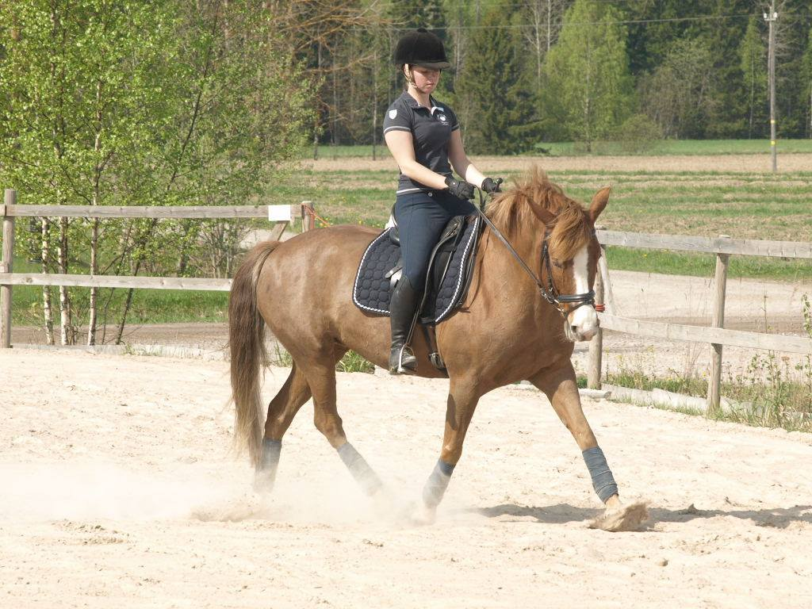
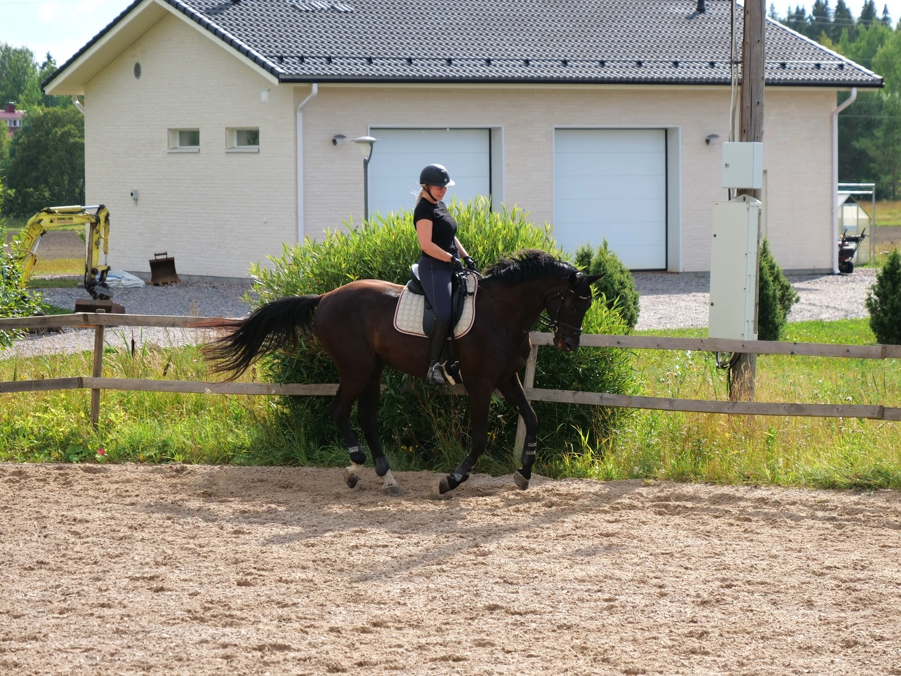
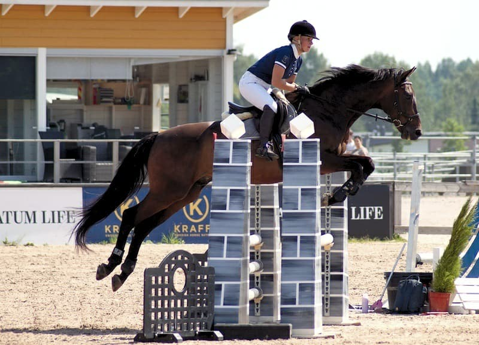
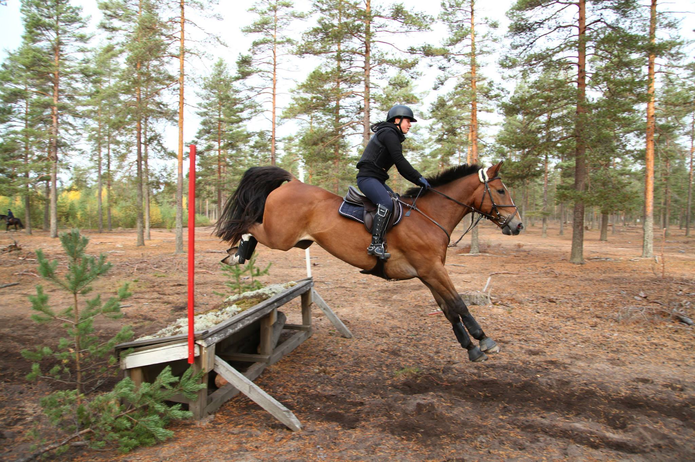

r. Twister "Sakke"
Sakke on vuonna 2012 syntynyt eestinhevos ruuna. Se on luonteeltaan erittäin kiltti ja omaa hienot liikkeet, mutta kokemattomuutensa vuoksi se käy kuitenkin vaim hieman kokeneempien ratsastajien tunneilla.
Sakke on vuonna 2012 syntynyt eestinhevos ruuna. Se on luonteeltaan erittäin kiltti ja omaa hienot liikkeet, mutta kokemattomuutensa vuoksi se käy kuitenkin vaim hieman kokeneempien ratsastajien tunneilla.

t. War Princess "Wallu"
Wallu on tallin luottoratsu. Se on syntynyt vuonna 2000 Virossa ja se on rodultaan eestin ratsuponi. Wallu on todella kiltti ja tekeekin pääasiassa alkeiskursseja. Wallulla ei käy enää estetunneilla vanhjan jalkavamman vuoksi.
Wallu on tallin luottoratsu. Se on syntynyt vuonna 2000 Virossa ja se on rodultaan eestin ratsuponi. Wallu on todella kiltti ja tekeekin pääasiassa alkeiskursseja. Wallulla ei käy enää estetunneilla vanhjan jalkavamman vuoksi.

r. Dunojus "Jussi"
Jussi on vuonna 2011 syntynyt hieno suuri kouluruuna. Sillä on hienot liikkeet ja se on erittäin osaava. Koulupainotteisuutensa vuoksi Jussi käy melko harvoin estetunneilla.
Jussi on vuonna 2011 syntynyt hieno suuri kouluruuna. Sillä on hienot liikkeet ja se on erittäin osaava. Koulupainotteisuutensa vuoksi Jussi käy melko harvoin estetunneilla.

r. Passero B "Paavo"
Paavo on kilpaillut esteillä sekä kentässä ennen ratsastuskouluun tuloa. Se onkin erittäin monipuolinen hevonen, mutta parhaimmillaan päästessään hyppäämään. Paavo on erittäin kiltti, mutta vaatii toimiakseen hieman herättelyä ja verryttelyä.
Paavo on kilpaillut esteillä sekä kentässä ennen ratsastuskouluun tuloa. Se onkin erittäin monipuolinen hevonen, mutta parhaimmillaan päästessään hyppäämään. Paavo on erittäin kiltti, mutta vaatii toimiakseen hieman herättelyä ja verryttelyä.

r. Lacerda "Jekku"
Jekku on osaava ja mukava ruuna joka on kilpaillut kaikissa eri lajeissa hyvällä tasolla. Maastoesteet ovat Jekun vahvuus, mutta se on mukava rastastaa myös sileällä.
Jekku on osaava ja mukava ruuna joka on kilpaillut kaikissa eri lajeissa hyvällä tasolla. Maastoesteet ovat Jekun vahvuus, mutta se on mukava rastastaa myös sileällä.

r. Enrico GER "Eetu"
Eetu on jo vanhempi herrasmies. Se on erittäin kiltti, mutta ei anna mitään ilmaiseksi. Osaavan ratsastajan kanssa Eetu taipuu jopa vaativampiin kouluratsastusksen liikkeisiin ja on hypännyt jopa 130cm ratoja.
Eetu on jo vanhempi herrasmies. Se on erittäin kiltti, mutta ei anna mitään ilmaiseksi. Osaavan ratsastajan kanssa Eetu taipuu jopa vaativampiin kouluratsastusksen liikkeisiin ja on hypännyt jopa 130cm ratoja.